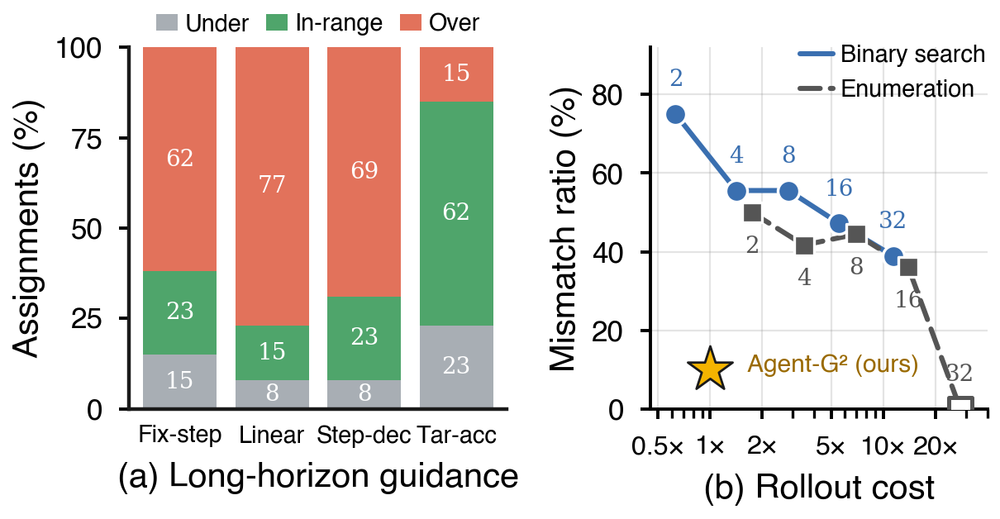
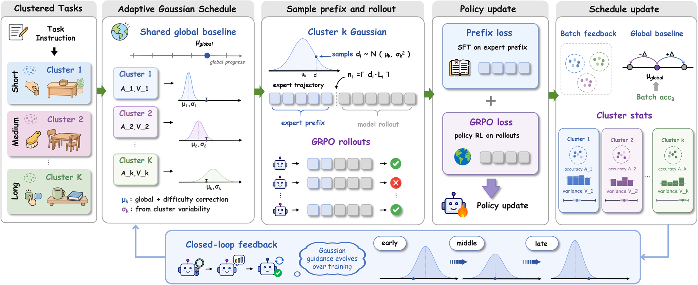
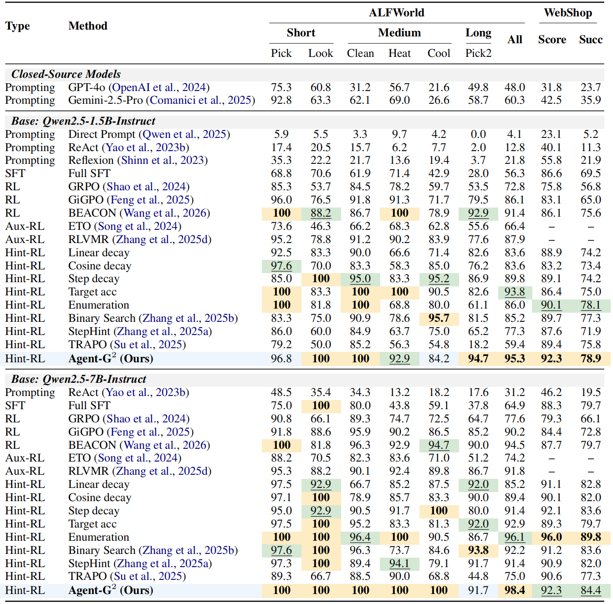

Guidance mismatch. Scalar-depth schedulers misallocate guidance because one shared value cannot match tasks with different informative bands. Per-sample probing lowers mismatch, but only by spending additional rollout budget.
Hint-based reinforcement learning addresses reward sparsity in long-horizon agentic tasks by retaining a prefix of an expert trajectory before each rollout, letting the policy explore from a state closer to success. Its effectiveness hinges on the guidance depth: how much of the trajectory to keep. Existing methods treat this depth as a deterministic scalar. Scheduled approaches share one value across samples and ignore per-task heterogeneity, while per-sample probing estimates it separately at the cost of extra rollouts. We find that useful guidance occupies a band of depths whose informativeness profile is approximately Gaussian around the band center. Agent-G² draws the depth per task from a Gaussian whose center and spread are estimated online from rollouts already collected for policy optimization, requiring no probe rollouts or learned depth predictor. On ALFWorld and WebShop with Qwen2.5-1.5B / 7B-Instruct, Agent-G² consistently improves over strong hint-based, hint-free, and auxiliary-RL baselines. It achieves 95.3% / 98.4% success on ALFWorld and a 92.3 reward score on WebShop at both model scales, with 78.9% / 84.4% final-purchase success.

The Agent-G² framework. Tasks are clustered by difficulty. A global baseline and per-cluster rollout statistics define a task-level Gaussian over guidance ratios. The same GRPO rollouts update both the policy and the next-batch schedule.
Agent-G² operates in four stages:

The main results. Agent-G² consistently improves long-horizon agent learning across both ALFWorld and WebShop. It achieves strong task-wise success on ALFWorld while matching or surpassing competitive hint-based, hint-free, and auxiliary-RL baselines. On WebShop, Agent-G² remains highly effective at both model scales without relying on extra probe rollouts, showing that adaptive Gaussian guidance can provide task-specific exploration at lower rollout cost.
@misc{wang2026agentg2,
title = {Agent-G²: Gaussian Guidance for Agentic Reinforcement Learning},
author = {Zixuan Wang and Yanrui Miao and Zhengxi Lu and Teng Pan and Yiwen Qiu
and Hongxing Li and Peng Qiu and Ruiqing Zhang and Yongliang Shen},
year = {2026},
note = {Accepted at EMNLP 2026 Main Conference},
}